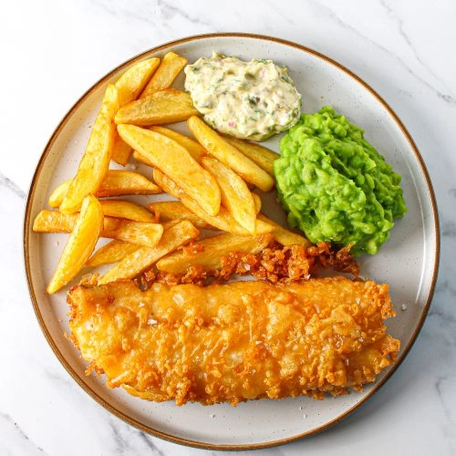

Fried Ramen
Ingredients:
- 1 11-oz. pkg. tortilla chips
- 2 cups shredded rotisserie chicken
- 6 ounces sharp Cheddar cheese, shredded (about 1½ cups)
- 1 cup prepared pico de gallo or salsa
- 2 radishes, thinly sliced
- 2 ounces cotija cheese, crumbled (about ½ cup)
- 1 ripe avocado, sliced
- ½ cup loosely packed fresh cilantro leaves
- 1 jalapeño, thinly sliced (optional)
- Hot sauce, for serving (optional)
Directions:
- Discard ramen noodle seasoning packets or save for another use. Cook noodles according to package directions.
- Meanwhile, in a small bowl, combine cornstarch, soy sauce, vinegar, hoisin sauce, ginger, garlic, salt and pepper until blended; set aside.
- In a large skillet, heat oil over medium-high heat. Add vegetables; cook and stir until crisp-tender, 5-7 minutes
- Stir soy sauce mixture and add to pan. Bring to a boil; cook and stir until thickened, 1-2 minutes. Drain noodles; stir into vegetable mixture. If desired, garnish with sesame seeds and green onions.
Nutrition Facts:
- 1 cup: 332 calories
- 14g fat (5g saturated fat)
- 0 cholesterol
- 235mg sodium
- 41g carbohydrate (5g sugars, 4g fiber)
- 8g protein

Fish and Chips
Ingredients:
- Oil for frying
- 1 cup all-purpose flour
- 1-1/2 teaspoons baking powder
- 3/4 teaspoon salt
- 1/2 teaspoon garlic powder
- 1/4 teaspoon paprika
- 1 ripe avocado, sliced
- 1/4 teaspoon pepper
- 1 cup very cold beer or nonalcoholic beer
- 1 egg, lightly beaten
- Tartar sauce and lemon for serving
Directions:
- Prep for frying
- In a shallow bowl, whisk together the flour, baking powder, salt and spices. Stir in the egg and cold beer until the batter is nice and smooth
- grab your cod filets and pat them dry. This will ensure that the batter clings to the fish. Dip the fish into the batter and allow excess to drip away
- Carefully place the fish into the oil and fry until golden, about two to three minutes on each side. Remove the fish from the oil and drain on paper towels before serving.
Nutrition Facts:
- 1 cup: 456 calories
- 32g fat (15g saturated fat)
- 20mg cholesterol
- 483mg sodium
- 32g carbohydrate (5g sugars, 4g fiber)
- 24g protein

Crispy Burger
Ingredients:
- 3 boneless skinless chicken breast halves (6 ounces each)
- 3/4 cup buttermilk
- 2 teaspoons hot pepper sauce
- 2 large eggs, beaten
- 1/2 teaspoon garlic powder
- 2 cups all-purpose flour
- 2 teaspoons pepper
- 1 tablespoon each onion powder and paprika
- 1 cup very cold beer or nonalcoholic beer
- 1/3 cup canola oil
- 6 brioche hamburger buns, split
Directions:
- Cut each chicken breast horizontally in half; place in a large bowl. Add buttermilk and hot sauce; toss to coat. Refrigerate, covered, for eight hours or overnight
- Remove chicken breasts from the buttermilk mixture and stir eggs into the buttermilk mixture. In a shallow dish, whisk flour, garlic powder, onion powder, paprika, pepper and salt. Dredge chicken in flour mixture, firmly patting to help coating adhere.
- Place the chicken on a wire rack over a baking sheet. Refrigerate, uncovered, for 30 minutes. Using a pastry brush, lightly dab both sides of chicken with oil until no dry breading remains.
- Heat canola oil to 375°F. Fry the chicken in batches until it’s golden brown and no longer pink, about 5-7 minutes. Once fried, transfer the chicken to a cooling rack to maintain the crispiness.
- Toast buns in an air fryer or under the broiler in your oven until golden brown, two to three minutes. Top bun bottoms with chicken, add desired toppings and replace the bun tops.
Nutrition Facts:
- 1 cup: 346 calories
- 12g fat (6g saturated fat)
- 23mg cholesterol
- 476mg sodium
- 32g carbohydrate (3g sugars, 8g fiber)
- 32g protein
Mediterranean Chicken Thighs
Ingredients:
- 2 tablespoons butter
- 2 tablespoons olive oil
- 6 bone-in chicken thighs (about 2 pounds)
- 1 can (14 ounces) water-packed small artichoke hearts, drained
- 1/2 teaspoon garlic powder
- 3 shallots, halved
- 1/3 cup dry white wine
- 1/2 cup pitted Greek olives
- 1/3 cup reduced-sodium chicken broth
- 1 garlic clove, thinly sliced
- 1 teaspoon ground sumac or za'atar seasoning
Directions:
- Preheat oven to 375°. In a 12-in. cast-iron or other ovenproof skillet, heat butter and oil over medium-high heat. Brown chicken, skin side down. Turn thighs over; arrange artichokes and shallots around chicken. Cook 1 minute longer.
- Add remaining ingredients to pan. Bake until a thermometer inserted in chicken reads 170°-175°, 15-20 minutes.
- Place the chicken on a wire rack over a baking sheet. Refrigerate, uncovered, for 30 minutes. Using a pastry brush, lightly dab both sides of chicken with oil until no dry breading remains.
Nutrition Facts:
- 1 cup: 378 calories
- 26g fat (7g saturated fat)
- 91mg cholesterol
- 476mg sodium
- 10g carbohydrate (1g sugars, 0g fiber)
- 25g protein
Double Cooked Fried Chicken
Ingredients:
- 1 broiler/fryer chicken (3 to 4 pounds), cut up
- 3 cups chicken broth
- 1 teaspoon crushed red pepper flakes
- 1 teaspoon lemon-pepper seasoning
- 1/2 teaspoon garlic powder
- 1/2 cup Louisiana-style hot sauce
- Oil for deep-fat frying
- 2 cups buttermilk
- 1 teaspoon ground cumin
Directions:
- In a 5- or 6-qt. slow cooker, combine the first 6 ingredients. Cook, covered, on low until meat is tender, 3-4 hours. Remove chicken from slow cooker; discard liquid.
- In a small bowl, whisk buttermilk and hot sauce until blended. Pour into a shallow dish. Add chicken; turn to coat. Refrigerate for 1 hour. Drain chicken, discarding buttermilk mixture.
- In a bowl or shallow dish, mix flour and seasonings. Add chicken, a few pieces at a time; turn to coat. Shake off excess.
- In a deep skillet, heat 2 in. oil to 375°. Fry chicken pieces, a few at a time, until chicken is golden brown and juices run clear, 4-6 minutes on each side. Drain on paper towels.
Nutrition Facts:
- 5 ounces : 578 calories
- 44g fat (7g saturated fat)
- 105mg cholesterol
- 576mg sodium
- 9g carbohydrate (1g sugars, 0g fiber)
- 35g protein

Smoked Pork Butt
Ingredients:
- 1 bone-in pork shoulder roast (8 to 10 pounds)
- Applewood chips or pellets
- 3 tablespoons spicy brown mustard
- 1/4 cup All-Purpose Meat Seasoning or favorite spice rub
- 1/3 cup apple cider or juice
- 3 tablespoons cider vinegar
Directions:
- Let roast stand at room temperature for 1 hour. Preheat smoker to 275°. Add wood chips or pellets to smoker according to manufacturer’s directions.
- Trim excess fat from pork, leaving some exterior fat. Pat roast dry; rub with mustard and sprinkle with spice rub. Place pork in smoker. In a spray bottle, combine apple cider and vinegar; lightly spritz pork. Smoke, spritzing every hour, until pork reaches 165° and is a dark brown color, about 5 hours.
- Transfer pork to a 13x9-in. baking pan or large cast iron skillet; liberally spritz with cider mixture. Cover tightly with foil and return to smoker. Cook until pork reaches desired degree of doneness. For slice pork, cook until pork reaches 190° to 195°, 2-3 hours longer. For pulled pork, cook until 200° to 205°.
- Remove and let stand at room temperature, covered, 45-60 minutes. For slices, cut around bone and cut roast into slices. For pulled pork, remove bone and shred pork. Skim fat from cooking juices; toss pork with cooking juices..
Nutrition Facts:
- 1/2 cup : 186 calories
- 11g fat (4g saturated fat)
- 65mg cholesterol
- 576mg sodium
- 0g carbohydrate (0g sugars, 0g fiber)
- 19g protein